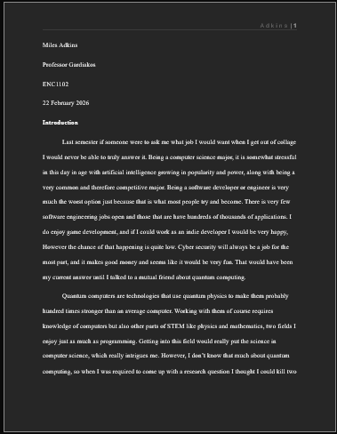

This assignment was the big final project of the semester. We had learned what a
research paper is, we proposed a question, we found research on that question,
and now we had to write a paper on the question and answer it.
Research Genre Production is quite literaly the SLO saying you will write
a research paper. But the way it is said is very interesting. The part saying you
will"navaigate choices and constraints" is a very important part of it. Before
This class my previous english professor explained that english 2 is going to be
slightly different than English 1 in the sense that you aren't going to get
3 large major assignments, Instead we had one big assignment split up into
3 smaller parts that helped us lead up to the final research paper in the end.
As a result it will be not only a test of can you write a research paper
but also can you do it with the amount of time because of the many different
challages along the way.
However saying that, This project was very fun to make for the most part. I chose to
talk about quantum computing and while it was difficult at times, It was still
a topic that I could right in a way that I enjoyed. And plus a cherry on top is that
it does have Information that can help people. Their might be a point where
the link to the right is a link to a stylus page, because I liked writing this
article so much that I try to perfect it to a point that I get it published. As of
writing this I dont know for sure but we will see.
